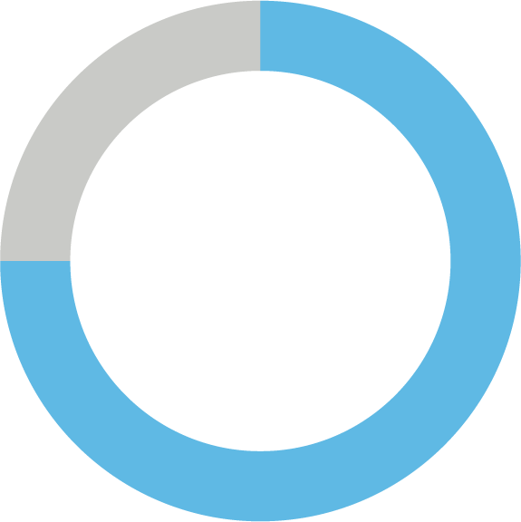

Key Discoveries

anticipate working during retirement
plan to go straight from full-time work to full-time retirement
would like some form
of guaranteed income through retirement
40%
27%
75%
Employees anticipate a more gradual transition to retirement, and most would like some form of guaranteed income through their retirement years.
Employees anticipate a more gradual transition to retirement, and most would like some form of guaranteed income through their retirement years.